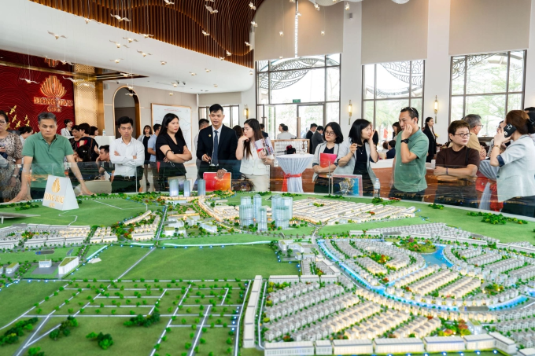

Mỹ – Iran đạt thỏa thuận về ngừng bắn, mở cửa eo biển Hormuz trong hai tuần
Mỹ và Iran đồng ý ngừng bắn trong hai tuần, Tehran sẽ cho phép tàu thuyền đi qua eo biển Hormuz trong thời gian này "với sự điều phối từ lực lượng vũ trăng".
Theo thông tin gửi tới các trái chủ, Công ty TNHH Phát triển Phú Mỹ Hưng báo lợi nhuận sau thuế năm 2025 khoảng 2.945 tỷ đồng, tăng 41% so với năm trước đó. Đây là mức cao nhất trong vòng 3 năm qua. Trung bình mỗi ngày, họ lãi hơn 8 tỷ đồng. Doanh nghiệp này không công bố phần giải trình biến động lợi nhuận. Thực tế, trong năm qua, họ đã triển khai mở bán Hồng Hạc City - dự án khu đô thị đầu tiên của doanh nghiệp này tại miền Bắc với diện tích hơn 197 ha và tổng mức đầu tư gần một tỷ USD. Còn tại "cứ điểm" phía Nam TP HCM, họ mở bán dự án căn hộ chung cư The Sculptura, giới thiệu dự án The Regency.
Nhờ mức tăng trưởng trong năm 2025, lợi nhuận lũy kế đến nay đạt hơn 15.075 tỷ đồng, cao hơn so với cuối năm trước khoảng 40%. Nhờ đó, vốn chủ sở hữu cũng tăng gần 54% lên khoảng 18.554 tỷ đồng. Đến cuối năm trước, tổng nợ phải trả của Phú Mỹ Hưng là khoảng 20.864 tỷ đồng, nhích nhẹ so với cùng kỳ. Trong nhóm vay nợ tài chính, vay ngân hàng tăng gần 77% lên 7.112 tỷ đồng. Song, nợ từ phát hành trái phiếu giảm hơn 31% về còn 5.472 tỷ đồng. Phú Mỹ Hưng phát hành 6 lô trái phiếu trong giai đoạn 2019-2021, còn 5 lô đang lưu hành, đáo hạn lần lượt từ năm nay đến 2027. Trong đó, ba lô chào bán nội địa có tổng trị giá 2.000 tỷ đồng, lãi suất 7,15-8,8% mỗi năm. Còn lại, họ huy động ngoại tệ 225 triệu USD và đưa ra lãi suất phát hành 2-2,58% mỗi năm.

Công ty TNHH Phát triển Phú Mỹ Hưng được thành lập tháng 5/1993, là liên doanh giữa Công ty TNHH Một Thành Viên Phát Triển Công Nghiệp Tân Thuận (IPC) và Phú Mỹ Hưng Asia Holdings (tên cũ là Tập đoàn CT&D, Đài Loan). Trong đó, Tân Thuận IPC góp 30% vốn, còn lại là vốn ngoại. Công ty nổi danh khi là chủ đầu tư của Khu đô thị Phú Mỹ Hưng (phía Nam TP HCM) - một trong những dự án nổi bật của thành phố khi biến vùng đầm lầy thành khu đô thị sầm uất. Họ muốn xây dựng nên khu đô thị đa chức năng, trung tâm tài chính, thương mại, dịch vụ, công nghiệp, khoa học, văn hóa, giáo dục, cư trú, giải trí... tạo động lực cho sự phát triển phía Nam và Đông Nam thành phố. Năm 2008, Bộ Xây dựng và UBND TP HCM công nhận đây là "khu đô thị kiểu mẫu" của Việt Nam.
Doanh nghiệp này xây dựng đại lộ Nguyễn Văn Linh có 10 làn xe, trở thành trục giao thông huyết mạch của khu Nam thành phố. Dọc theo đó, Phú Mỹ Hưng được giao phát triển năm cụm đô thị với tổng diện tích 774 ha. Hiện tại, khu đô thị này nổi tiếng với hồ Bán Nguyệt, trung tâm thương mại Crescent Mall, khu nhà phố - biệt thự và loạt căn hộ chung cư đã bàn giao như Garden Plaza, Riverpark Residence, The Panorama, The Peak Midtown... Năm nay, Phú Mỹ Hưng cho biết sẽ tung thêm giỏ hàng ở dự án The Regency, Hồng Hạc City. Doanh nghiệp này cũng mở rộng địa bàn sang khu vực Thủ Dầu Một (Bình Dương cũ) với dự án Harmonie, hướng tới nhóm khách hàng trẻ.

Mỹ và Iran đồng ý ngừng bắn trong hai tuần, Tehran sẽ cho phép tàu thuyền đi qua eo biển Hormuz trong thời gian này "với sự điều phối từ lực lượng vũ trăng".

Người dân Iran tập trung trên đường phố Tehran, vậy có và hô khẩu hiệu sau khi lệnh ngừng bắn hai tuần với Mỹ được công bố.

Nằm ở bộ nam eo biển Hormuz, cách Iran gần 34 km, bán đảo Musandam của Oman đang chứng kiến những hệ lụy về kinh tế và đời sống khi xung đột bùng phát.